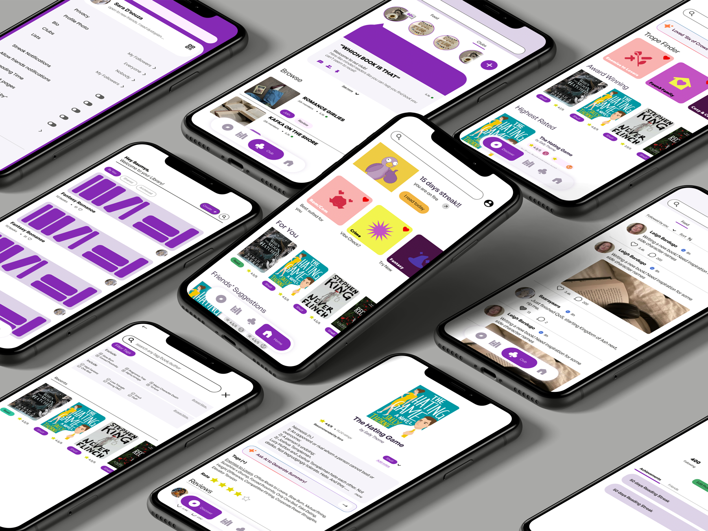
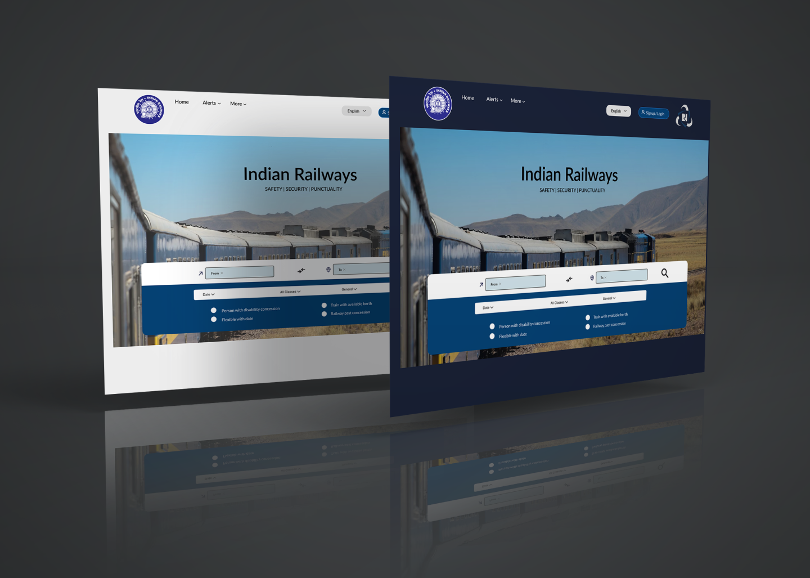
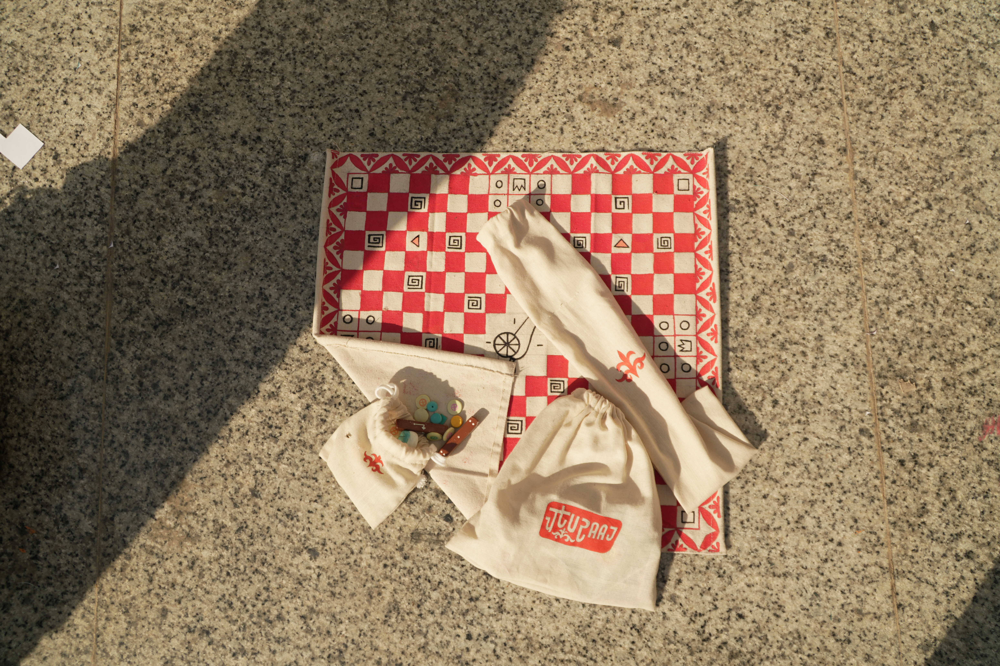
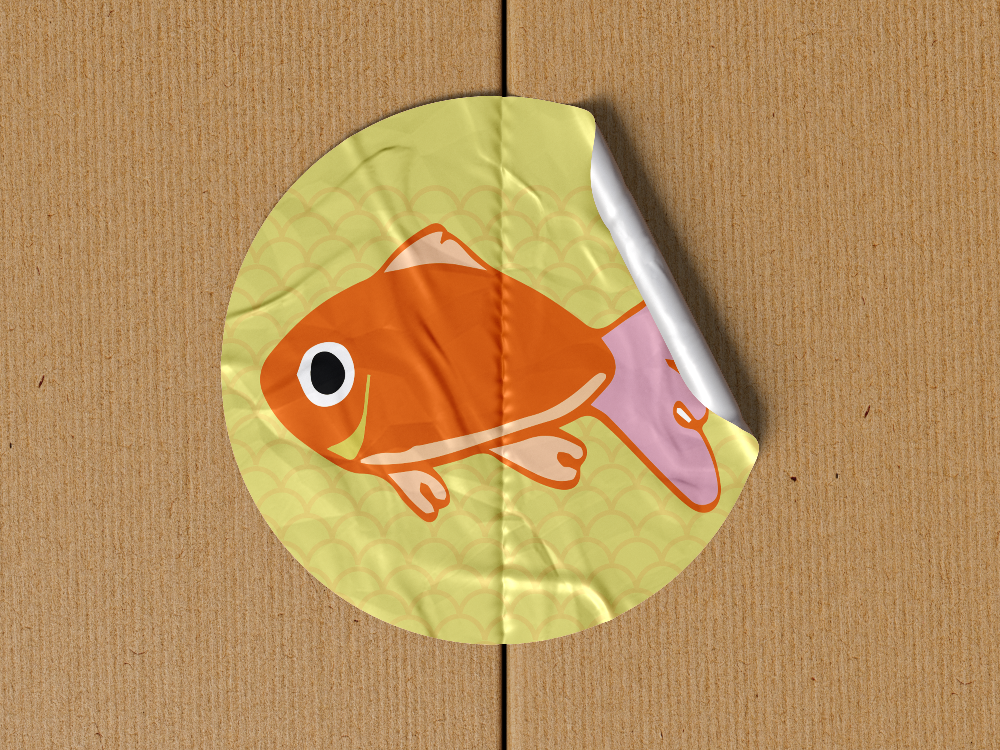

Illustration series
Hi, I'm Saumya.
I'm a UX designer who researches how people actually use software, then designs what they would actually choose. Calm interfaces over engagement metrics. Behaviour over features.
01 · Selected Work
01
 Financial Data Platform Framer
Data platform
Interface for browsing, comparing, and acting on financial data streams.
↗
04
Financial Data Platform Framer
Data platform
Interface for browsing, comparing, and acting on financial data streams.
↗
04
 Lifelog Framer
Adobe Designathon
A photo-memory app built for the Adobe Designathon.
↗
06
Lifelog Framer
Adobe Designathon
A photo-memory app built for the Adobe Designathon.
↗
06
 I Was Going to Study Plants Side project
Data viz · Somatic memory
Tracking conditioned emotional responses across place, sound, and experience.
→
I Was Going to Study Plants Side project
Data viz · Somatic memory
Tracking conditioned emotional responses across place, sound, and experience.
→

BookNest Case study UX research · Product design A reading platform designed for behaviour, discovery, gentle streaks, and small clubs. → 02 Ping Browser Case study UX/UI design · Website · Dashboard A Chromium-based enterprise browser website, dashboard, and design system. → 03
Financial Data Platform Framer
Data platform
Interface for browsing, comparing, and acting on financial data streams.
↗
04

IRCTC Redesign Behance UI/UX case study Rethinking India's railway booking platform from a frequent-traveller's view. ↗ 05
Lifelog Framer
Adobe Designathon
A photo-memory app built for the Adobe Designathon.
↗
06

Chaturaaj Behance Board game design A modern Indian board game — rules, board, pieces, and packaging. ↗ 07
Piscivore Framer Branding Brand identity, packaging, and web for a fish-food company. ↗ 08
I Was Going to Study Plants Side project
Data viz · Somatic memory
Tracking conditioned emotional responses across place, sound, and experience.
→
02 · Fun Corner
The stuff that isn't on a brief.
Side projects, books I'm reading, music I'm circling. Hover any tile.
Side projects
Books I'm reading

Becoming Supernatural

Why Thinking is Ruining Your Life
Pick
—
Spotify playlists


Drop playlist cover PNGs at assets/fun/playlist-1.png etc. and update the
href to the real Spotify URL.
03 · About
Hi, I'm Saumya — a 22-year-old in her prime, currently floating between passionately chasing life and simply observing it unfold.
From figuring out how to cross a road diagonally to navigating the elements that make up the self, I've always been obsessed with making life a little more efficient, thoughtful, and intentional. I believe the tiniest choices carry weight, and I carry that mindset into every project I take on.
I'm an Interaction Design student focused on human-centred digital systems, with interests stretching across behavioural UX, branding, and web. I try to blur the lines between daily living and purposeful creating — whether I'm designing apps or just reflecting on a conversation.
Always up for a conversation about UX research, behavioural design, reading habits, board games, or anything that resists the engagement-loop default.